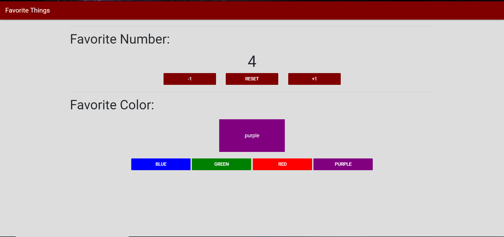
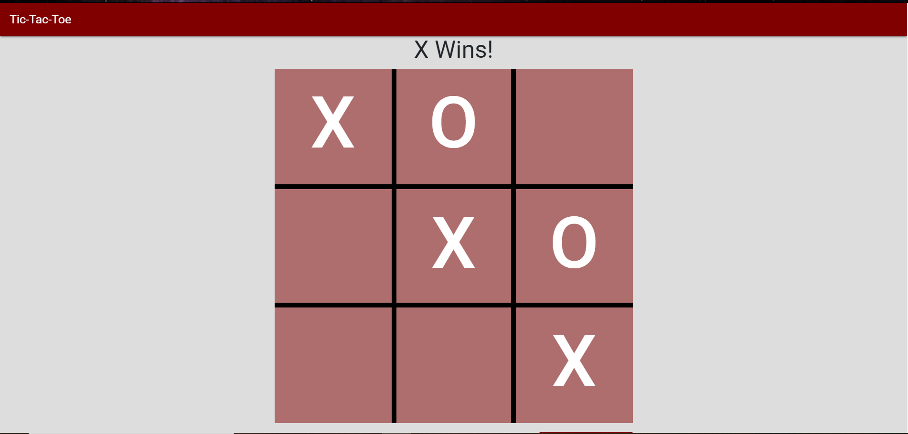

Portfolio
-
Favorite Things
Simple webpage which implements the basics of JavaScirpt to change the text of Favorite Number to any negative or postive number and to change the color box to any of the button colors. This website as implments Bootstrap to fomate for many devices.
Tic Tac Toe
Game of tic tac toe which implements a graph layout with CSS and JavaScirpt classes that allow for the mark to be changed as well as the whose turn it is